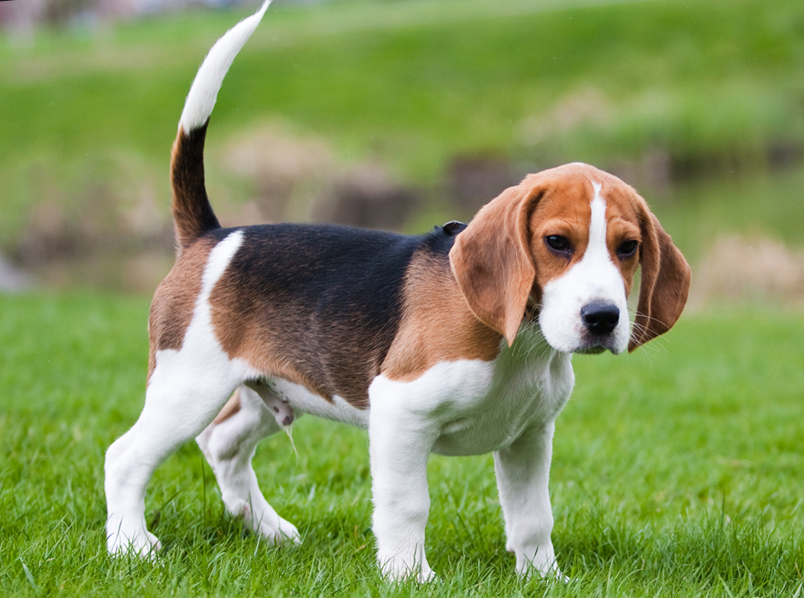

Бигль
- Продолжительность жизни: 12-15 лет (хотя некоторые доживают и до 18)
- Группа: Охотничья
- Окрас шерсти: триколор, черно-коричневый, лимонно-белый, рыже-белый, светло-рыжий с белым.
На шерсти бигля встречаются отметины разных цветов
- Длина шерсти: средняя.
- Линька: умеренная.
- Рост : 38-40 см
Эта очень общительная порода собак, легко устанавливающая близкие отношения, как с взрослыми, так и с детьми всех возрастов,
поэтому прекрасно подходит для семей с детьми.
Бигли обычно хорошо ладят с собаками, но не доверяют другим домашним питомцам.
Кошки и другие маленькие домашние животные могут рассматриваться биглями как добыча.
Эти собаки решительны и активны, поэтому им может потребоваться дополнительное обучение для корректного поведения.
Бигли не любят, когда их оставляют одних на длительное время. Одинокий бигль может стать разрушительным и нервным.
Поэтому, если существует необходимость оставлять собаку одну на длительные промежутки времени, стоит подумать о компании,
в лице еще одной собаки.
Лай биглей помогал в охоте и был необходим в других спортивных состязаниях,
в которых участвовали собаки этой породы на протяжении многих лет. Однако если вы держите бигля в качестве домашнего питомца,
его громкий лай может раздражать, и не только вас, но и ваших соседей. Поэтому важно обучить собаку сдерживать свой лай,
что может быть не простой задачей, особенно с молодыми животными.
Эти собаки имеют сильный инстинкт следовать за запахами и могут путешествовать на большие расстояния,
если вы спустите их с поводка и не уследите за ними. Чтобы бигль не пропал,
следуя своим инстинктам лучше держать его на огражденной территории и не спускать с него глаз.
Бигли умные, живые и желающие обучаться собаки. Они быстро приспосабливаются к окружающей их среде и меняют свое поведение.
